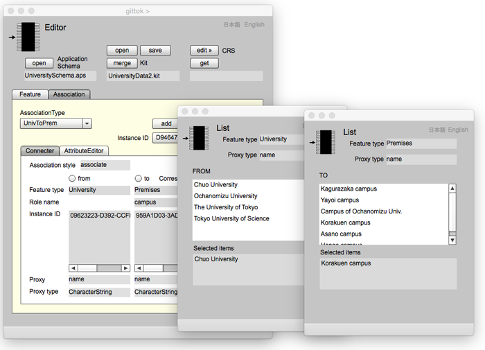
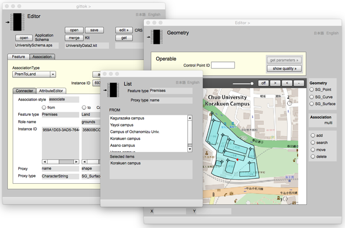
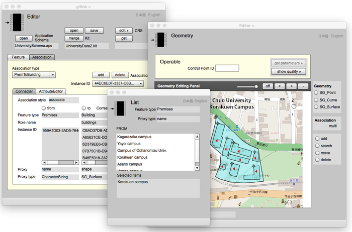
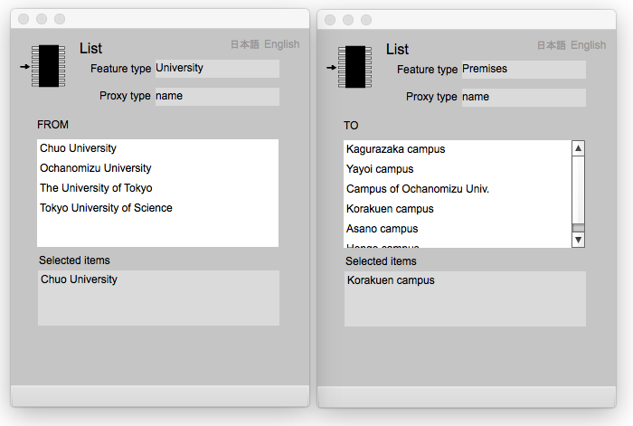

List
地物の代理としての文字列属性の一覧
List pageは，地物の代理属性が文字列になっているときに地物の一覧を表示するページである．地物の代表的な属性は幾何属性である．しかし，幾何属性をもたない地物もありうる．例えば，大学は位置や形をもつであろうか．大学のキャンパスや校舎は幾何属性をもつであろう．しかし，大学という地物は，人々の合意や公的機関の認可でその存在が認められるのであって，それ自体に位置や形はないと考えることができる．本部の住所などが公開されているが，それはあくまでも本部の建物がある位置であって，大学全体をさす位置ではない．企業や官庁なども，大学と同じように位置や形はもたないと考えることができる．
そこで，幾何属性を代理としない地物と他の地物の関連性を定義するときは，その地物の代理属性のリストを表示させ，それによって関連を示すとよい．List pageは，地物の代理属性が文字列になっているときに地物の一覧を表示するページである．List page は，特に地物同士の関連をデータとして記録し編集するときに使用される （Editor pageのテキスト参照）．ここではまず，実例を使用してList page を使った関連インスタンスの編集について説明し，次にList page の表示欄やボタンの説明を行う．
大学とキャンパス
ほとんどの大学 (University) には一箇所以上のキャンパスがある．そしてキャンパスを構成する敷地 (Premises) にはグラウンドになる土地 (Land) と，その上に建てられた建物 (Building) の集まりがある．土地や建物は幾何的な形状をもつが，大学やキャンパスに独自の幾何形状はない．多くのGISの教科書では，「地理情報は幾何と属性の対」と定義づけているが，gittokでは幾何属性を持たないオブジェクトでも，実世界で起きている現象である限り，地物と解釈している．このような状況を応用スキーマとして表現すると例えば図１のようになる．
Figure 1. 大学とその敷地を表現する応用スキーマ
実世界の現象の抽象概念を地物という (ISO 19101:2002 - 参照モデル)．抽象とは，対象となるものの性質を取捨選択，つまり単純化して表現することをさす．例えば上記の大学は，その属性として名称と総長（学長）の名前が選択され，UnivTpPremという関連を通じて，ひとつ以上のキャンパスをもつ．敷地は名称を属性とし大学のキャンパスという役割をもち，PremToLandとPremToBuildingsを通じて土地と建物をもつ．土地は形状を属性とし，建物は名称と形状を属性とする．
この応用スキーマの通りに空間データを作成する手順を以下に示す．
1. Editor pageで，大学のインスタンスを作成する．
2. Editor page で，敷地のインスタンスを作成する．
3. 二つの List page を使って，大学と敷地を結ぶ関連インスタンスを作成する．結果はFigure 2 の通りである．
4. Geometry page で土地の形状をデジタイズし，それを属性とする土地のインスタンスを Editor page で作成する．
5. List page と Geometry page を使って，敷地と土地を結ぶ関連インスタンスを作成する．結果はFigure 3 の通りである．
6. Geometry page で建物の形状をデジタイズし，その幾何と名称を属性とする建物インスタンスを Editor page で作成する．
7. List page と Geometry page を使って，敷地と建物を結ぶ関連インスタンスを作成する．結果はFigure 4 の通りである．

Figure 2. Chuo UniversityとKorakuen campusの関連
University ListからChuo Universityを選択し，Premises ListからKorakuen campus を選択すると，EditorのFrom 側のInstance ID欄に，Chuo UniversityのIDが表示される．また，to側のInstance ID欄にKorakuen campusのIDが表示される．さらに，Editorのshowボタンを押すと，二つのList page の Selected items 欄に，両者のproxy である名称が表示される．

Figure 3. Korakuen campus とその敷地となる土地の関連
Premises List からKorakuen campusをfrom 地物として選択し，Geometry page 上でキャンパスの土地をto 地物として選択すると，EditorのFrom 側のInstance ID欄に，Korakuen campus のIDが表示される．また，to側のInstance ID欄に土地のIDが表示される．さらに，Editorのshowボタンを押すと，List page の Selected items 欄に，proxy であるKorakuen campus が表示され ，Geometry pageに，to 地物のproxy である曲面の代表位置に赤い三角形（toという意味）が表示される．

Figure 4. Korakuen campus と，それに含まれる建物の関連
Premises List からKorakuen campusをfrom 地物として選択し，Geometry page 上でキャンパスの建物を順に to 地物として選択すると，EditorのFrom 側のInstance ID欄に，Korakuen campus のIDが表示され，to側のInstance ID欄に建物のIDが表示される．さらに，Editorのshowボタンを押すと，List page の Selected items 欄に，proxy であるKorakuen campus が表示され ，Geometry pageに，to 地物のproxy である曲面全ての代表位置に赤い三角形（toという意味）が表示される．
List

Figure 5. from 地物の一覧と to 地物の一覧
Flelds
Feature type
from または to として選択した地物の型名が表示される．
Proxy type
from または to として選択した地物の proxy になる属性の型名が表示される．
FROM または TO （選択可能）
この List page が from 用の一覧の場合は，FROMというラベルを表示し，from 地物のproxy 属性の一覧が表示される．to 地物の場合は，TOというラベルを表示し，to 地物のproxy 属性の一覧が表示される．この一覧から地物を選択すると，Edtor page の from 側または to 側ののInstance ID欄に，選択した地物のIDが表示される．
Selected items
Editor page の show ボタンをクリックすると，ここに，from またはto として選択された地物のproxy属性が表示される．
日本語
今あなたが読んでいるドキュメントが表示されます．
English
You can read the tutorial written in English.